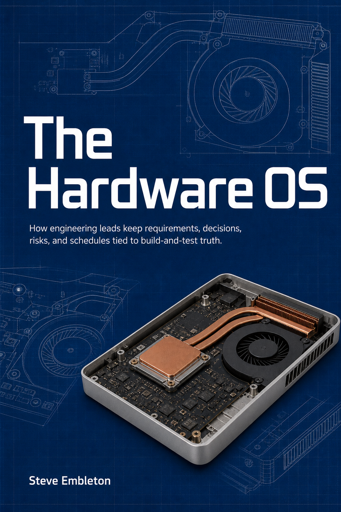
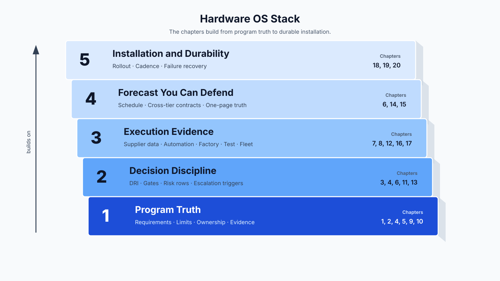
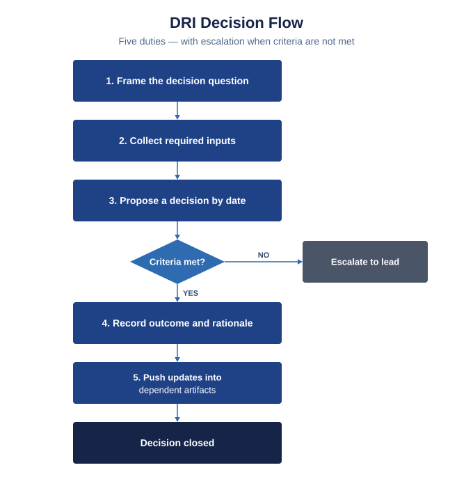
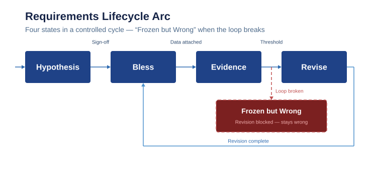

The Hardware OS

Author: Steve Embleton
How engineering leads keep requirements, decisions, risks, and schedules tied to build-and-test truth.
Start reading: use the sidebar for the full outline, or open 1. The Missing Manual.
The Hardware OS, in one page
Reading order: see book/SUMMARY.md.
Twenty short chapters. Read them in order. They are not twenty separate ideas — they sit on five operating layers. Knowing the layer a chapter belongs to tells you what it is for, and what it is not for.

| Layer | What this layer guarantees | Chapters |
|---|---|---|
| 1. Program truth | One source of truth, one ownership rule, requirements as managed values, decisions as records | 1, 2, 4, 5, 9, 10 |
| 2. Decision discipline | DRI authority, gates as decision events, risk rows as decision artifacts, escalation triggers | 3, 4, 6, 11, 13 |
| 3. Execution evidence | Supplier data, automation choices at concept, factory and test reality, fleet learning | 7, 8, 12, 16, 17 |
| 4. Forecast you can defend | Schedule from real dependencies, cross-tier reciprocal contracts, executive one-page truth | 6, 14, 15 |
| 5. Installation and durability | Rollout sequence, training and cadence, failure recovery, where the OS does not reach | 18, 19, 20 |
A chapter can appear on more than one layer when its mechanism genuinely spans them. Gates show up in decision discipline and in forecast because a gate decision both changes a controlled baseline and moves the forecast. The layer is not a category; it is a declaration of what the chapter must guarantee for the OS above it to hold.
Reading straight through, the layers assemble in order: truth first, then decisions about truth, then evidence that supports the decisions, then a forecast that holds the evidence and decisions together, then the install plan that makes the whole system survive contact with the next program.
What this operating system looks like working
The concrete test is not a metric. It is a set of people doing their jobs without friction.
Your exec can leave Friday afternoon. Not because the program is done, but because the gate status is real, the risk register surfaces what would otherwise surprise them, and every open decision has a named owner and a date. They are not anxious because they are not holding the program truth in their head. The one-page status is holding it for them, and they trust it.
Your PM stops asking "where are we?" A PM who trusts the schedule and the risk log shifts from chasing daily status to clearing real blockers. The artifacts answer the question before it is asked. That is not a nice-to-have — it is the measurable output of Layers 3 and 4 working. A PM who stops pinging is a PM who has something reliable to read.
Your engineering team makes decisions, not presentations. When requirements are managed hypotheses with visible evidence, when gate packets come from live records instead of slide heroics, and when the schedule is built from real dependencies, the team spends its time on the technical problem — not on reconciling contradictions between what the slides say and what the test floor sees.
These are the outcomes the OS is designed to produce. The chapters are the mechanism.
How to use this map
Use this page as a map you come back to. Each chapter states which mechanism it introduces; this page says which layer that mechanism lives in. If a chapter feels repetitive, check which layer it is on — it may be introducing the same vocabulary in a different operating context (a different scale, a different tier, a different phase of the program).
If you are in a specific role:
- Engineering lead: start with Layer 1 (program truth). Everything else is scaffolding on top of that foundation.
- PM: Layers 4 and 5 will resonate immediately; go back to Layer 2 to understand why the gates and risk rows are built the way they are.
- Executive or sponsor: the one-page truth (Ch. 6), cross-tier contracts (Ch. 14), and schedule integrity (Ch. 15) are the direct executive-facing chapters. The chapters around them explain why the artifacts work when they work.
Artifact examples: bad vs. good
Use this page as a quick-reference alongside the main chapters. Each chapter explains why the bad version fails and what the good version controls.
The four artifacts below are the core surfaces the Hardware OS runs on. Every chapter that mentions "decision record," "requirement," "risk row," or "one-page status" is referring to these shapes.
Requirement
The bad version has a value but gives the team nothing to test, no condition to bound it, and no way to know who approved the current number or why.
| Field | Bad | Good |
|---|---|---|
| Statement | "System shall be robust" | "Leak rate shall be ≤ 0.5 sccm at 1.2 bar differential, ambient 0–40 °C, measured by Method M-04" |
| Owner | (blank) | Named engineer, week of last review |
| Evidence | (blank) | Link to test result or physics derivation that bounds the value |
| Acceptance method | "TBD" | Specific test method, sample size, pass criterion |
| Revision history | (blank) | Change log with rationale and approver for each revision |
See Ch. 5 for revision discipline and the hygiene checklist.
Decision record
The bad version records an outcome with no trail. Anyone who reads it six weeks later cannot reconstruct the trade, cannot tell who approved it, and cannot find what else changed as a result.
| Field | Bad | Good |
|---|---|---|
| Decision | "Team aligned to update thermal limit" | "Revise RQ-THERM-014 from 85 °C to 78 °C per T-117 chamber evidence" |
| Owner | TBD | Thermal lead |
| Rationale | (blank) | "T-117 measured 78 °C steady-state; boundary condition error in model confirmed by M-23" |
| Alternatives | (blank) | "Considered 80 °C with derating margin — rejected: supplier cannot hold derating at current geometry" |
| Downstream artifacts updated | (blank) | "Supplier package flagged for re-qual (ECO-2027-031), schedule R-14 row updated, Gate 3 one-page revised" |
| Approver / date | (blank) | Program lead, Day 9 post-T-117 |
See Ch. 4 for DRI ownership and minimum decision record fields.
Risk row
The bad version looks like an active register. It behaves inert: no one can trigger a decision from it, and "yellow" carries no evidence anyone can challenge or update.
| Field | Bad row | Decision-grade row |
|---|---|---|
| Statement | "Thermal" | "Thermal margin insufficient at full-duty 40 °C ambient" |
| Owner | Engineering team | Thermal lead |
| Likelihood / Impact | Yellow | Medium (T-117 showed 78 °C vs 85 °C limit) / High (gate hold, supplier re-qual) |
| Trigger | (blank) | Any chamber run exceeding 77 °C |
| Mitigation | In progress | Revise RQ-THERM-014; re-qual supplier package by Gate 3 |
| Decision date | (blank) | Gate 3 |
| Evidence | (blank) | T-117, M-23 |
See Ch. 6 for the full risk-row schema and gate decision logic.
One-page status
The bad version compresses uncertainty into confidence. An exec or PM who reads it cannot tell whether the calm tone reflects real evidence or polished slides. When the bad version is wrong, nobody finds out until it is too late to act cheaply.
| Section | Bad | Good |
|---|---|---|
| Current state | "Program tracking to plan" | "Gate 3 on track; thermal risk open — RQ-THERM-014 revision decision due Friday; supplier re-qual starts Monday" |
| Top risks | "Thermal risk tracking green" | "R-14 thermal: medium/high — T-117 measured 78 °C vs 85 °C limit; owner: thermal lead; decision: Gate 3" |
| Decision log deltas | (blank) | "DR-2026-014 closed: thermal limit revised to 78 °C; supplier notified" |
| Critical dependencies | "Supplier on track" | "Cold-plate extrusion: slip of 8 working days; replanned to Week 22; critical path impact: none if Gate 3 holds" |
| Asks / escalations | "None" | "Need program lead approval on revised supplier qualification plan by Thursday" |
See Ch. 6 for the minimum one-page schema and source-record traceability requirement.
These examples use the canonical RQ-THERM-014 case that runs through Chs. 4, 6, 9, 10, 12, 13, 15, and 17. Substitute your program's artifacts; the field shapes hold.
1. The Missing Manual
Reading order: see book/SUMMARY.md. Cross-references in this chapter use SUMMARY order, not filename number.
Monday, 6:47 a.m., parking-lot light still on, messages already stacking before the standup.
The thermal limit changed again.
Mechanical already cut metal to last week’s number. Electrical has a new test trace that says the old number was optimistic. The supplier says they never got the last revision anyway. The program manager is trying to hold the date everyone committed in the first quarter. Your executive wants a one-page update by noon: Are we still on track or not?
Everyone is working. Nobody is slacking.
The program is still drifting.
You have watched this movie. It is usually not weak engineers. It is usually no manual for the process: no agreed way for work to cross team lines, no shared rule for what “locked” means when new data shows up, no honest tie between the schedule and long leads plus what test actually measured, and no single page where that story stays true before the room invents a new one.
Process means the written habits: who owns the handoff, where the numbers live that the factory is allowed to build to, who may change that number after a test, and how everyone who needs to know finds out before they order steel. Not paperwork stapled on after the design is “done.” The thing that keeps the design from quietly forking inside three different inboxes.
Most engineering leads earn the role on technical judgment, then get judged on skills nobody prints in the promotion packet: who owns the step when mechanical’s output becomes electrical’s constraint; what has to exist after a meeting so people actually build to the same assumption; what belongs on a one-page status; how a limit moves when evidence says it must; when to pull an executive in before a week turns into a quarter. Nobody hands you a course for that bundle. The industry still behaves as if you learn it by walking past the right cubicles long enough.
That gap costs money the same way bad parts cost money: slips, rework, supplier scrap, trust thinning with the people paying the bills. The same scenes on repeat: no owner on the interface line in writing, executive-facing pages that read confident while build and test already know the open item, suppliers going quiet when the drawing set forks, the stretch of calendar where cheap learning has become expensive metal.
This book closes that gap.
The PM in the room
The PM is usually the easiest face to blame when the review gets loud. They are also the one left holding ship windows someone already showed a paying customer while the technical facts are still moving. When what the team knows and what leadership sees do not match, someone still has to turn what actually happened into a plan someone can fund. Facts in hallway fragments and slide footnotes mean the PM keeps asking “where are we?” while mechanical, electrical, and supply each carry a different piece of the answer.
Usually not a personality failure. Missing process: named owner for the handoff, one-page story that matches build and test, written decision when a tradeoff changes, early pull on risk and long leads while you can still steer. When the week stops burning on the same unanswered question, PMs get room to clear blockers instead of running the same worry past everyone again. Those habits start with leads, because that is where they get installed first or not at all.
From the outside it can look like temperament. It is almost always facts that never landed in one place. Back to the list you can actually fix.
What “missing manual” looks like
You see the same failure modes often enough to stop calling them bad luck.
Handoffs nobody owns. Interfaces, limits, and supplier cut-ins sit between org charts. Everyone assumes someone checked. Nobody can point to the sheet that is supposed to be true tomorrow morning.
Paper locked, reality unlocked. Numbers and dates live in mail threads or decks, not where build, test, and supply chain actually run.
Heroic individuals, fragile program. The work gets done because one person holds the context — who owns the call, where the open items live, what the real number is. When that knowledge is not in a record, work that depends on it cannot close. People push in parallel on the same question, each carrying a different piece of the answer, none of it forced into a single decision.
Late truth. Risk and dependency never land in writing where PM and executives can help early, so the surprise shows up first in an exec review, then in metal, then in the field. Wrong altitude for cheap fixes.
Schedule theater: the physics, procurement, and test facts that drive the date moved weeks ago, but the shared plan never caught up. The meeting defends loyalty to a date instead of updating the plan to match the facts. Name it that way and you can at least stop adding your own layer to it.
None of those get fixed by working harder on the same scattered pattern. I came to this late. A few different employers showed me what I had not been naming.
Three programs, one lesson
Three stretches of work. Same lesson as the list above.
Same people, different written habits. What changed was control discipline: one controlled source for the build limit instead of four slide versions, a named signer and date for post-test changes, and direct reporting from the engineer who did the work instead of each layer rewriting the message upward.
Early in my career I saw programs where timelines slid again and again with very little forcing function: no single story of one plan, one date, one record people actually used. People were busy. Key decisions stayed open anyway.
Later I touched energy hardware where right-to-left schedule pressure was not a slide. Survival. Long leads and thermal work landed in the same month as procurement. PMs there were doing real work keeping motion visible while engineering learned what had to be surfaced and written down before it burned the path. Risk and dependency still hurt when they arrived late. Expensive in time and metal.
The strongest program rhythm I have seen personally was on a cell program: tight requirements, real phase gates, a PM who made state obvious to everyone, engineers who owned critical work in front of leadership without each manager filtering and re-editing the message on the way up. Strong process, and the program still needed a technical lead to keep the team from circling the same narrow pocket in the design space for a quarter. Good process did not erase leadership. It focused it.
Now I work with a large industrial org on power electronics. Wins are not a clever topology tweak and are more like pulling the program out of opaque reporting, soft requirements, timelines that slip without anyone writing down why. Biggest gain is often process — engineering cost and time recovered — not a topology or architecture win.
Those sketches point at the same conclusion as the opening: nobody is trying to fail. The operating manual for how decisions and numbers move is what is missing.
What this OS covers — and what it does not
Operating habits and records for hardware programs: ownership, spec integrity, gates that mean something, risk you can read, fleet and factory learning used as instruments, automation choices made early enough to matter, schedules tied to real dependencies, supplier truth that matches what build and test see.
Primary reader: the engineering lead, the person who ends up owning integration whether or not the title caught up. PMs and executives too. Same facts in the same order the lead needs, without inventing another standing meeting to get them.
Not a textbook on formal drawing rules, structured multi-factor experiments, or simulation theory. Those tools matter; pull specialists when the program needs them. You get when to insist on that class of work, what “good enough to decide” looks like, how the result feeds a gate and a one-pager.
Not a replacement for design history, functional safety, or regulatory paperwork. The final chapter names the boundary so nobody confuses these habits with compliance.
Process is the product — the system being built while the hardware is being built. The question that follows is how to run that without it becoming religion.
2. Process Is the Product
Monday, 9:35 a.m., test floor lights at half, second shift still cleaning up yesterday’s run.
Two programs just failed the same end-of-line leak test.
Both teams have competent engineers, a supplier in the loop, and a date that will not move without consequences. Both have test data that says the current build is not stable enough to ship.
One program contains the issue in a day and restarts with a revised control plan. The other burns two weeks arguing whether the failure is fixture drift, operator variation, or the wrong revision on the floor.
The deciding variable is decision plumbing: how test evidence becomes a signed plan.
Same physics, different outcomes
Program A has one controlled source for the leak-rate limit and fixture calibration state, with revision history and owner. When failures spike, the containment decision, root-cause owner, and restart criteria are written in one change record with signer and date. The PM one-pager pulls from that same record, so leadership, manufacturing, and supplier all see the same state. The date moves, but it moves once and with reasons.
Program B has the drawing revision in one system, the work instruction in another, and supplier evidence in email. Manufacturing says fixture drift. Design says tolerance stack. Quality says operator variation. The status deck still shows last week's confidence color because nobody owns the merge from evidence into decision. The PM spends the week reconciling contradictions instead of clearing blockers. By the time leadership sees the real risk, cheap fixes are gone.
Same technical problem. Different operating system.
Teams call this "execution," but the mechanism is simpler: the path from evidence to decision is either designed or improvised. If it is improvised, each shock costs more than it should.
What process actually is
In this book, process is not ceremony. It is the minimum written system that keeps one program reality across functions.
At minimum, that system has:
- Named ownership for decisions and handoffs.
- One source of truth for active limits, requirements, and revisions.
- Decision records that explain what changed, why, and who approved it.
- Gate criteria that decide, not just review.
- One-page status that matches the underlying record.
- Escalation rules for when evidence breaks the current plan.
If one of those is missing, the team does not fail immediately. It fails noisily over time: duplicate work, delayed truth, meetings that replay the same argument, and last-minute surprises that look like "bad luck."
This is why process belongs in design work, not in a PM appendix. It changes what gets built, when it gets built, and what can be defended to customers and leadership.
Why weak process makes technical problems expensive
Weak process adds cost in four ways.
First, it creates latency. Good data exists, but it takes days to become a decision because nobody owns the transition from test result to plan update.
Second, it creates rework. Different groups act on different versions of the truth, then spend time undoing each other.
Third, it creates risk blindness. The one-pager reports confidence while the underlying record reports uncertainty, so management acts on stale optimism.
Fourth, it creates trust debt. Suppliers, PMs, and executives stop trusting the current number because the number keeps changing without a visible decision trail.
None of that is abstract. It shows up as scrap, missed windows, overtime, and avoidable churn in people who are already stretched.
The operating rule
Treat process artifacts as product artifacts.
If a limit, dependency, or risk can change build, cost, or date, it needs an owner, a controlled record, and a visible decision path. If it has no owner or no record, treat it as not real yet.
This rule is strict on purpose. Hardware programs punish ambiguity late. Remove ambiguity when evidence first appears, before purchasing and build decisions fan out.
A corollary worth keeping visible: every artifact in this system should reduce latency, rework, or ambiguity. If a record, checklist, or status field does not demonstrably do one of those three things, retire it. The minimum system listed above is exactly that — minimum. Do not add to it until the minimum proves it reduces argument and lag on your program.
What changes this week
If your program is already moving, do this before adding new templates:
- Pick one active cross-team limit that is causing repeated meetings.
- Name one owner for that limit.
- Declare one controlled location as the live value.
- Write one short change log entry format: what changed, why, who approved, impact.
- Make the next one-page status pull from that record.
That is enough to expose whether your current process is implemented or cosmetic.
Install one narrow control loop first. Prove it reduces argument and lag, then extend.
Running a narrow control loop is the start. The harder problem is naming what the loop surfaces — because “bad communication” and “unowned decision” are not the same failure and do not have the same fix.
3. Failure Patterns: Chaos, Drift, and Unowned Decisions
The minimum control loop is running. What it cannot do on its own is tell you which failure pattern is breaking it — or where to look first.
Monday, 12:50 p.m., afternoon already drags, coffee going cold in the conference room.
Day 19 of an EVT build for a handheld controller, and this is the third meeting on the same leakage-limit decision; every slip keeps a $42k fixture order on hold.
Test says one thing. The status page says another. Procurement already acted on a third version because nobody marked which number was live.
Three people in the room have calendar proof they worked the issue; the program has no record of who owns the live number or when it was last confirmed.
The program still misses the decision window.
This is where teams waste months: treating recurring operating failures as isolated incidents.
Why naming patterns matters
Most postmortems describe events. Useful postmortems name patterns.
An event is "supplier lot failed incoming check." A pattern is "we had no owner for the handoff from incoming data to build decision, so three teams acted on different states for six days."
If you only name events, you fix the last fire. If you name patterns, you remove a class of fires.
Three patterns show up together in hardware programs:
- Chaos: too many truths active at once.
- Drift: reality moved, but plan/status did not.
- Unowned decisions: the question is known, but no person is accountable for closing it.
They look separate in meetings. In practice, closure slips spread parallel assumptions and stale status, so the three patterns reinforce each other.
Pattern 1: Chaos
Chaos means multiple conflicting versions of the same fact are active at once.
Symptoms are easy to spot:
- Two "latest" revisions in circulation.
- Lab evidence in one channel, supplier evidence in another, decision in neither.
- A confidence-green status page built from stale assumptions.
Chaos cost is immediate: rework, mis-buys, and wasted meeting cycles spent reconciling state before real problem-solving even starts.
The core mechanism is missing control of truth state. If nobody can answer "which value is live, where, and since when," the team is in chaos even when people feel organized.
Pattern 2: Drift
Drift starts after a legitimate change.
New evidence arrives. A requirement shifts. A supplier lead time stretches. Nothing dramatic happens that day. One week later the schedule, one-pager, and downstream tasks still assume the old world.
That lag is drift.
Drift cost compounds quietly:
- Date risk is discovered late.
- The risk register shows lower risk than the evidence supports, because nobody updated it after the change.
- Teams optimize for targets that no longer match physics or supply reality.
The core mechanism is slow or missing propagation of change. A change without a written, owned update path is not a change. It is a pending surprise.
Pattern 3: Unowned decisions
Unowned decisions usually sound like "we keep discussing this."
The question is clear. The data is mostly available. The trade is known. But there is no named person responsible for closing the decision, documenting it, and updating dependent work.
So the decision becomes a recurring meeting topic instead of a completed program action.
Unowned decisions create both chaos and drift:
- While closure is delayed, multiple interim assumptions spread (chaos).
- As closure slips, the plan and status diverge from current evidence (drift).
This is why ownership is not a management preference. It is a technical control.
How the three patterns chain together
They usually run in this order:
- A decision is unowned, so closure slips.
- During the slip, teams run different assumptions (chaos).
- Status and schedule lag behind reality (drift).
- The eventual correction is expensive because many downstream actions already committed.
You can interrupt the chain at any step, but the cheapest break point is first: assign ownership and close the decision while the blast radius is still small.
Fast diagnostic you can run this week
Pick one active cross-functional issue and ask five questions:
- What exact question must be decided?
- Who is the owner of closing it?
- Where is the current agreed value or decision recorded — the one the team is building and testing to right now?
- What changed in the last week, and where is that recorded?
- Which downstream artifacts were updated after the change?
If your team cannot answer all five in under ten minutes, you are not dealing with one bad meeting. You are inside one or more of these patterns.
What to fix first
Do not try to solve chaos, drift, and ownership with three separate initiatives.
The EVT program from the opening scene resolved the same way this always resolves. One owner was named for the leakage-limit value. A single field was added to the existing status record: current live value, owner, and date last confirmed. The next week's review ran the five-question check in seven minutes. The fixture order cleared. The decision did not come back to a meeting. Old process: three channels carrying different values, no truth-state owner. Artifact changed: one field added to the live decision record — owner name, confirmed value, confirmation date. Measured improvement: two repeat meetings eliminated; the $42k fixture order cleared in the same week as the ownership assignment. Cost of the gap: nineteen days of delayed procurement action and a third repeat meeting that could have been the last.
The minimum control loop already in hand — owner, record, one-pager — applied to one stuck decision. The three patterns are not three separate problems; they share one root and one fix. Close the ownership gap on one active decision path, and all three patterns shrink at once.
If unowned decisions are the first break point, ownership cannot stay vague. Naming a pattern is half the fix. The other half is defining what ownership actually means — what the person accountable for a decision is allowed to do, required to do, and not allowed to delegate.
4. DRI Ownership and Decision Authority
Reading order: see book/SUMMARY.md. Cross-references in this chapter use SUMMARY order, not filename number.
Ch. 3 named the failure patterns. Unowned decisions are the first break point because without a named person accountable for closure, the control loop from Ch. 2 has no one to run it.
Monday, 3:55 p.m., late sun on the whiteboard, decision still hanging open.
The question is clear. The data is good enough. The room still does not decide.
Everyone has input. Nobody has closure authority.
By next week, the same topic appears in three meetings with three different "current" assumptions.
This is not a communication problem. It is an ownership design problem.
DRI means closure, not coordination
A DRI is not "the person who schedules the meeting."
A DRI is the person accountable for:
- framing the decision question,
- collecting required inputs,
- proposing a decision by date,
- recording the outcome and rationale,
- pushing updates into dependent artifacts.

If those five are not explicit, you do not have a DRI. You have a coordinator.
Authority must match responsibility
The most common ownership failure is giving responsibility without authority.
"You own this thread" means nothing if the owner cannot:
- call the decision when criteria are met,
- escalate when criteria are blocked,
- and enforce update of the one-page status and dependent records.
Authority does not mean unilateral control over everything. It means a known decision boundary and a known escalation boundary.
A battery-pack team hit this exact gap when a thermal-limit decision stayed open for eight days. The assigned DRI could gather evidence but could not call a hold on pilot build — the authority boundary was not written into the ownership map, so the DRI waited for a consensus that never arrived. Purchasing kept ordering cells to the old thermal limit for all eight days. The fix was a one-line revision to the ownership record: the DRI was given explicit hold authority when the chamber-evidence threshold was crossed. The next thermal revision — same decision type — closed in four hours. The eight-day cost was not analysis time; it was two status meetings, one gate-prep review, and eight days of cell orders that had to be redirected.
What breaks when ownership is fuzzy
Shared ownership sounds collaborative and often behaves like delay.
Failure signatures:
- Decisions reopen because nobody is accountable for final closure.
- Teams hold parallel assumptions while waiting for "alignment."
- Escalations happen late because no one is responsible for raising the flag.
- PM and exec updates become negotiation artifacts instead of state artifacts.
The cost is not just time. It is trust in the decision system.
Minimum ownership map for Week 1
You do not need an org redesign to fix this. You need a narrow map:
- Top 10 active cross-functional decisions.
- One DRI per decision.
- Decision deadline per decision.
- Required inputs per decision.
- Decision authority level (team, lead, exec).
- Escalation path if blocked.
Publish this map where engineering and PM both work from it. If it lives only in one lead's head, it is already stale.
Decision record standard (minimum)
Every closed decision needs one short record:
- decision question,
- decision made,
- alternatives considered,
- why this choice now,
- owner/sign-off/date,
- downstream artifacts updated.
No long memo required. One durable record is enough to stop re-litigation.
Acceptable implementations for the decision record include a lightweight Architectural Decision Record (ADR) markdown file under version control for small engineering-led teams, a Confluence page using a structured template with Owner / Decision / Rationale / Downstream-updates fields, a Jira issue type with custom fields for decision authority and evidence link, or a PLM Engineering Change Order when the decision is product-data-controlling. The OS does not care which; it cares that the fields — owner, decision question, evidence, rationale, affected artifacts, approver, date — are all in one place and reachable by anyone on the program.
Decision record: bad vs corrected
| Field | Bad (incomplete) | Good (decision-grade) |
|---|---|---|
| Decision | Revise thermal limit | Revise RQ-THERM-014 from 85 °C to 78 °C per T-117 chamber evidence |
| Owner | TBD | Thermal lead |
| Rationale | (blank) | T-117 measured 78 °C steady-state; boundary condition error found in model; contact-resistance verified by M-23 |
| Downstream updates | (blank) | Supplier package flagged for re-qual (ECO-2027-031), schedule R-14 row updated, Gate 3 one-page revised |
| Approver | (blank) | Program lead |
| Date | (blank) | Day 9 post-T-117 |
Escalation without drama
Escalation is a design feature, not a social failure: it fires when trigger conditions are hit, not when room politics allow it.
Define escalation triggers in advance:
- missing critical input by date,
- unresolved cross-function conflict,
- risk threshold exceeded,
- customer/compliance impact.
When trigger conditions are objective, escalation is faster and less political.
If you can name the DRI for every open program decision today, and each DRI has proposed a decision by a date, the OS is doing its job. If any question is 'TBD / team / committee,' it is not.
Decision classes: not every call needs the same overhead
Not every decision warrants the full DRI machinery. The overhead should match the reversibility.
A reversible decision — component selection before tooling, test parameter adjustment during EVT — can move fast with a lighter record and a lower authority threshold. The DRI still owns closure, but speed is the right bias. The cost of being wrong is small; the cost of being slow is real.
An irreversible decision — tooling release, supplier qualification, customer specification commitment — requires the full map: written authority boundary, decision record, downstream artifact updates. Replaying an irreversible decision is expensive enough to justify the added friction before calling it.
A build-to-learn unit is a third class. The acceptance criterion is "what did we learn?" not "did it pass the requirement?" Treating a build-to-learn result as a production failure is a scope error. Name the unit's class before it hits the floor. The DRI for a build-to-learn unit owns the learning extraction, not the conformance call.
If you are not sure which class a decision falls in, ask one question: if we call this wrong, can we undo it before purchasing and build decisions fan out? If yes, it is reversible. If no, treat it as irreversible until proven otherwise.
5. Spec Integrity and Requirement Hygiene
Reading order: see book/SUMMARY.md. Cross-references in this chapter use SUMMARY order, not filename number.
Ch. 4 defined who closes decisions. What those decisions close on is the requirement record — and a decision is only as good as the requirement it references.
Tuesday, 7:20 a.m., half the room still on their first coffee, ship windows already on the screen.
Manufacturing asks which revision is real. Test says they validated Rev C assumptions. Procurement already placed orders against Rev B.
The drawing package is "released." The program still has three definitions of done.
Spec integrity is not about prettier documents. It is about one build reality.
What spec integrity means
Spec integrity means every team can answer the same four questions with the same source:
- What is the current requirement?
- Why is it that value?
- What evidence supports it?
- Who approved the latest change?
If answers differ by function, the program does not have a spec. It has parallel interpretations.
Hygiene failures that look small and cost big
Most failures are not dramatic. They are quiet mismatches.
Rev C.2 changed the leak-test dwell value, but manufacturing work instructions still referenced Rev C.1 while test benches used the new value. That one mismatch forced three days of teardown and retest, and the team then found REQ-117 had no owner and no rationale trail for the original dwell change. Once REQ-117 was assigned an owner and a controlled revision record was created with the rationale for the dwell change, the next revision — a ten-second dwell adjustment — was processed in four hours and reached all affected work instructions the same day.
Each one is manageable alone. Together they make gate decisions soft and supplier execution unpredictable.
Requirement statement quality (minimum bar)
A requirement is usable when it is:
- specific (single unambiguous statement),
- measurable (clear units and method),
- bounded (conditions/scope explicit),
- traceable (stable ID and source),
- owned (named person accountable for quality).
"System shall be robust" is not a requirement. "Leak rate shall be <= X under conditions Y and Z, measured by method M" is.
Revision discipline
Revision control is where integrity usually breaks.
Minimum discipline, applied to each requirement:
- One controlled source — same location, same revision label, across every function.
- Change log entry with rationale and evidence link.
- Explicit impact note: which tests, supplier packets, and schedule rows must update.
- Approval path by change class — small adjustments differ from requirement redefinition.
If a value changes without this chain, treat the change as unofficial until cleaned up.
Requirement hygiene checklist for active programs
Run this weekly on active high-risk requirements:
- Owner named
- Current value and revision confirmed
- Source/evidence linked
- Acceptance method defined
- Last change rationale captured
- Downstream artifacts updated (test plan, one-pager, supplier packet)
This is not paperwork for paperwork. It is a control loop for decision quality.
Acceptable implementations for the requirement record include a PLM module with controlled revision fields (Windchill, Teamcenter, Arena) when design data is already PLM-controlled, a Jira issue type with locked fields for Owner / Evidence / Acceptance-method / Revision-history for smaller programs, a shared spreadsheet with locked columns and a named owner for every row for very early-stage work, or a controlled markdown requirements log under version control when the team is small and engineering-led. The OS cares about six fields — owner, current value, evidence link, acceptance method, rationale, and downstream-update record — not about the tool that holds them.
Why this chapter sits before gates
Gates cannot be strong if requirement quality is weak.
A gate asks, "Are we ready to commit?" If requirement truth is ambiguous, the gate becomes theater regardless of slide quality.
Spec integrity is the substrate under every later control: risk scoring, one-page truth, supplier alignment, and schedule realism.
If a requirement in your current baseline has no evidence link, no named acceptance method, and no revision history, it is not a requirement. It is a wish with a number. Find three of those today and fix them.
6. Gates, Risk Registers, and One-Page Truth
Reading order: see book/SUMMARY.md. Cross-references in this chapter use SUMMARY order, not filename number.
Ch. 5 installed requirement quality. Gates, risk rows, and one-page status are the synchronization mechanism that keeps requirements, decisions, and evidence in one shared view across all functions.
Tuesday, 10:45 a.m., gate slides on the projector, room still smelling like someone’s takeout from an hour ago.
The gate deck looks clean. The room still cannot answer one simple question: what changed since last gate that alters risk to launch.
If a gate cannot produce that answer in two minutes, the program is performing confidence, not making decisions.
Gate reviews: decision points, not slide events
A gate is useful only if it closes explicit decisions.
Minimum output of every gate:
- decision taken (go/hold/re-scope),
- owner for each follow-up action,
- date and criteria for closure,
- artifact delta list (what records changed as a result).
No decision, no gate. Just a meeting.
Not every gate is a decision gate. A readiness review confirms that planned next-phase inputs are in place — no controlled value needs to change. An evidence review surfaces test or analysis results without forcing a decision yet — useful when the data is new and the team needs to absorb it before proposing a change. An alignment meeting reconciles cross-tier expectations without triggering a baseline change. A regulatory or customer staging gate moves a formal record forward in a controlled lifecycle. All of these have legitimate jobs. The rule "no decision, no gate" applies specifically to events on the program plan named "gate" that are expected to change a controlled baseline, requirement, or release — when those events happen but no controlled value changes, the gate is mislabeled. Rename it accurately: call it a review, write down what it produces, and stop treating it as a gate.
Risk register: from decorative list to control tool
Most risk registers fail because they track nouns, not decisions.
A usable risk row needs:
- risk statement,
- owner,
- likelihood/impact basis,
- trigger signal,
- mitigation action,
- decision date,
- current status with evidence link.
If "owner" is a team name and "status" is a color, the register will look active and behave inert.
Risk register: bad row vs decision-grade row
| Field | Bad row | Decision-grade row |
|---|---|---|
| ID | R-14 | R-14 |
| Statement | Thermal | Thermal margin insufficient at full-duty 40 °C ambient |
| Owner | Engineering team | Thermal lead |
| Likelihood / Impact | Yellow | Likelihood: medium (T-117 showed 78 °C vs 85 °C limit) / Impact: high (gate hold, supplier re-qual) |
| Trigger | (blank) | Any chamber run exceeding 77 °C |
| Mitigation | In progress | Revise RQ-THERM-014, re-qual supplier package |
| Decision date | (blank) | Gate 3 |
| Evidence | (blank) | T-117, M-23 |
One-page truth: executive view tied to source records
The one-page status is not a summary slide. It is the control surface for shared truth.
Minimum one-page sections:
- current state vs target (what moved this week),
- top risks and triggers,
- decision log deltas,
- critical dependencies and slips,
- asks/escalations with owners.
Every line should trace to a source artifact. If leadership cannot drill down from line to record, confidence will exceed reality.
A one-page status that traces every line to a live record is the artifact that lets an executive leave for the weekend without anxiety. Not because the program has no risk — every hardware program has risk — but because the risk is named, owned, and visible in the register. The exec does not need to call because the register will surface what would otherwise surprise them. An engineering lead who has built a traceable one-page is an engineering lead whose exec has something reliable to read.
Acceptable implementations for the one-page status include a Confluence page with embedded live links to the risk register, gate packet, and requirement log — refreshed weekly by a named owner — when the team uses Confluence. A generated PDF or slide refreshed automatically from a dashboard tool (Power BI, Tableau, or a simple data connector) works when the source records are already in structured systems. A controlled markdown file under version control, refreshed weekly with named source citations, works for small teams. The OS cares that each line traces to a live source artifact — not that the page is beautiful.
One-page status: bad line vs traceable line
Bad:
Thermal: 🟡 On track — team working the issue
Good:
Thermal: RQ-THERM-014 revised to 78 °C per T-117 | R-14 closed at Gate 3 | Supplier re-qual in progress per ECO-2027-031 | Cold-plate extrusion: 11-day slip, recovery in schedule rev 4
Update rhythm that keeps it honest
Cadence matters more than formatting.
Recommended rhythm:
- risk register refreshed at least weekly by owners,
- one-page refreshed on fixed cadence before leadership touchpoints,
- gate packets pulled from live records, not rebuilt from memory.
Late updates are not neutral. They create drift by definition.
Failure mode: deck replaces record
When decks become the source of truth:
- decisions disappear after the meeting,
- risk ownership blurs,
- teams optimize for narrative coherence over state accuracy,
- and escalations arrive as surprises.
The fix is not "better decks." The fix is record discipline and traceable one-page lines.
Practical install in two weeks
Week 1:
- standardize risk row format,
- assign owner to every active high-impact risk,
- define trigger rules for top 10 risks.
Week 2:
- rebuild one-page from risk + decision records,
- run next gate using artifact delta list,
- reject items that cannot trace to source.
Before Gate G3, risk row R-14 listed "supplier CpK pending" with no decision date, and the one-page line still read "launch confidence: green." The decision had been deferred through two prior gate cycles — each cycle the row stayed yellow and no action date was set. After the gate decision to hold the launch lot and fund gauge redesign, R-14 gained an owner and a decision date and the one-page delta changed to "launch at risk until CpK ≥ 1.33 evidence dated 2026-05-12." The R-14 decision, once it carried a named decision date, closed in one meeting. Gauge data collected two weeks later confirmed the launch lot would have produced a 12% first-pass yield miss at the customer — a containment action that would have cost more than the gate hold.
Two weeks is enough to expose whether your current rhythm is decision-grade.
If every line on your one-page status this week traces to a named live record — not a slide, not memory, not a color — the status can be trusted without a phone call. If any line is unsourced, that is the gap to close before the next gate.
8. Automation Decisions at Concept Stage
Reading order: see book/SUMMARY.md. Cross-references in this chapter use SUMMARY order, not filename number.
Tuesday, 2:20 p.m., concept review optimism still on the whiteboard from this morning.
The design review celebrates fit, function, and cost.
Six months later, the line cannot probe one critical node without custom fixture workarounds that add 40 seconds per unit and destabilize yield.
Nothing is "wrong" with the product design. The automation path was never designed into it.
The core mistake
Teams treat automation as a downstream implementation problem.
It is not. Automation viability is set by concept-stage choices:
- access geometry,
- datum strategy,
- tolerance and stack assumptions,
- test point location,
- part presentation,
- traceability architecture.
Delay those decisions and the program pays in cycle time, scrap, and heroic workaround engineering.
On one actuator program, the concept team chose recessed test-pad geometry to save enclosure space. At ramp, that choice forced a manual probing station between ICT and final test and added 52 seconds per unit. At 10,000 units per month, 52 seconds per unit added 144 hours of test-floor time; when the team attempted to automate after tooling was fixed, fixture redesign consumed six additional weeks.
Concept-stage questions that prevent late pain
Before architecture freeze, answer:
- What critical characteristics must be measured in production?
- How will each be accessed physically?
- What cycle-time target constrains station design?
- What data must be captured per unit for release and field learning?
- Which steps are likely manual at launch and automatable later?
If these answers are absent, automation is already a schedule and yield risk.
Minimum design-to-automation handoff
You do not need full line design at concept stage.
You do need a minimum handoff package:
- current concept geometry and tolerance assumptions,
- critical-characteristics list,
- preliminary test strategy,
- target cycle-time envelope,
- traceability/data requirements,
- open risks and decision dates.
This lets automation, manufacturing, and test challenge assumptions while change is still cheap.
Failure signature of late automation
Late automation programs show the same signs:
- fixtures become product redesign proxies,
- cycle-time misses are "discovered" at ramp,
- manual rework stations become permanent,
- data needed for root-cause is unavailable or too noisy.
The debt is technical and usually gets masked as "we need to keep ramp moving."
What to do if you are already late
If concept is over, you still have levers:
- Identify top three throughput/yield constraints driven by design-for-automation misses.
- Classify each as design change, fixture change, or process workaround.
- Quantify cost of each workaround in cycle time and yield impact.
- Escalate one design change if workaround cost exceeds threshold.
- Capture lessons as mandatory inputs for next concept phase.
This turns regret into program learning instead of repeated debt.
Automation is a decision-quality topic
Automation arguments are often framed as tooling preference. They are usually requirement and ownership failures:
- unclear measurable targets,
- late closure on critical characteristics,
- no owner for integrating design/test/manufacturing constraints.
Treat automation as part of the operating system and it becomes predictable. Treat it as "integration detail" and it becomes late-stage volatility.
If the test coverage plan for your current program includes unit counts, cost per unit, and a pass/fail threshold for automation — and that calculation was done before the concept was locked — the decision was made at the right time. If the test coverage is still 'TBD at D-phase,' the decision is already late.
15. Schedule from Real Dependencies and Honest Critical Path
Reading order: see book/SUMMARY.md. Cross-references in this chapter use SUMMARY order, not filename number.
Tuesday, 5:50 p.m., long shadows in the program office, dependency chart finally honest.
The launch date on the slide has not moved in three months.
The dependency chain under it has moved every week.
This is date reporting without dependency control.
A schedule is a model, not a promise
The launch date is an output of the dependency model.
The model is dependencies, durations, and uncertainty.
When teams treat the date as fixed input and dependencies as optional narrative, recovery arrives too late.
Dependency-first schedule logic starts with:
- required outcomes,
- prerequisite tasks,
- ownership of each task,
- uncertainty ranges,
- integration constraints between streams.
Then the planning lead computes the date from that model instead of declaring it in advance.
Honest critical path
Critical path is not "the work we care about most."
It is the chain that controls completion date.
Rules for honest path management:
- recalculate path when task state changes,
- include external dependencies (supplier lead, compliance, tooling),
- include integration and validation tasks (not only build tasks),
- show float explicitly.
If your plan has no visible float and no uncertainty ranges, the schedule has no tested recovery path.
Failure modes that fake schedule confidence
Common schedule distortions:
- compressing non-critical tasks and calling it recovery,
- hiding blocked dependencies in "in progress" buckets,
- assuming parallelism where shared people/equipment make it serial,
- reporting completion percent instead of decision readiness.
These behaviors protect optics and destroy forecast quality.
At an energy storage program, the announced launch date had not moved in three months on the program slide. Underneath, three thermal-related long-leads had quietly slipped: the cold-plate extrusion (11 working days, triggered by the RQ-THERM-014 revision that changed the geometry requirement), the thermal interface material qualification (8 days, triggered by the contact-resistance finding), and a chamber booking for the revised configuration (6 days, because the test queue had moved). The cold-plate extrusion slip (11 days) was triggered by the RQ-THERM-014 revision described in Ch. 9. None of the slips were visible on the schedule because the schedule had been built date-to-date, not dependency-to-dependency.
When the team recomputed the chain — what depends on what, with honest durations and buffer for uncertainty — the new date was 19 working days beyond the announced date. The recovery conversation that followed was real: cut one product variant from the launch scope, change the supplier extrusion sequence to overlap with qualification, fund a parallel chamber booking. The conversation was hard. It was also the first honest program conversation in three months. Old process: schedule defended date-to-date with narrative compression. Artifact changed: the dependency chain rebuilt from real durations with three named recovery levers (scope, sequence, resources). Measured improvement: 19-day date revision discovered and communicated four months before launch, rather than two weeks before. Cost of the gap: four months of decision-making downstream of a date everyone knew was wrong.
Weekly cadence for schedule truth
A useful weekly cycle:
- Refresh task state from owners.
- Recompute dependency chain and current critical path.
- Identify path deltas since last cycle.
- Update one-page status with specific impact.
- Trigger escalation where recovery needs scope/resource decision.
If the team does not recompute dependencies each cycle, the status packet is not decision-grade.
A PM who trusts the schedule stops asking for daily status. That shift is not a sign of disengagement — it is the signal that the artifacts are doing their job. When the dependency chain is live and the weekly cadence publishes a delta note, the PM has something reliable to read before the review. The engineering lead who has earned that trust has bought themselves protected time to solve the technical problem instead of presenting it repeatedly.
Acceptable implementations for the dependency-based schedule include Smartsheet or MS Project when the team already has one and will maintain the dependency links, Jira Advanced Roadmaps for teams whose work is tracked in Jira, an Excel model with a named dependency-notes column when the program is small and the PM will own the model, or a simple markdown dependency list under version control for very small programs where a Gantt is overhead. The OS does not care which tool; it cares that the date is derived from the dependency chain and uncertainty fields — not set first and defended by narrative compression.
What real recovery requires
Recovery has only three levers:
- change scope,
- change sequence,
- change resources.
"Work harder" does not change dependency structure, so it cannot be a fourth lever.
For every recovery claim, require:
- which lever is being used,
- which dependency it changes,
- what risk it adds,
- who approved the trade.
Without these four fields, recovery is rhetoric.
Link to gates and one-page truth
Schedule integrity depends on records you already built:
- decision logs (what changed),
- risk register (what can slip next),
- one-page truth (what leadership sees),
- ownership map (who closes blockers).
If these are weak, schedule updates drift into negotiation instead of model updates.
If your plan has no visible float and no recovery lever named in writing, you do not have a schedule. You have a date with a story around it.
9. Requirements Lifecycle (Hypothesis -> Bless -> Evidence -> Revise)
Reading order: see book/SUMMARY.md. Cross-references in this chapter use SUMMARY order, not filename number.
Wednesday, 6:50 a.m., lab hallway quiet, the thermal verification log shows requirement RQ-THERM-014 set to 85 °C while chamber run T-117 fails above 78 °C. (This case appears again in Ch. 12, where the chamber evidence that forced the revision is the model-vs-chamber gap, and in Ch. 13 where the gate closure logic is the point of failure.)
The systems requirements owner set RQ-THERM-014 to 85 °C, and last week's full-load chamber test showed the assembly drifting out of spec above 78 °C.
The change board leaves RQ-THERM-014 unchanged because leads fear a revision will be labeled "moving goalposts" before Gate 3.
Design, test, and supplier teams keep building to a known-wrong value until the next gate review forces a contradiction.
That is delay debt paid by integration and gate owners when hardware evidence collides with an obsolete requirement at formal review.
Requirements are managed hypotheses
A requirement starts as a controlled hypothesis in the requirement log: this value must hold for a named operating condition.
The requirement hypothesis becomes decision-ready through:
- stating assumptions in the requirement record,
- attaching bounded evidence to the same requirement ID,
- recording controlled revisions with rationale,
- assigning clear approval authority for each revision.
Treating early requirement values as permanent truth creates fake certainty and expensive rework once evidence arrives.
Lifecycle states (practical model)
Track each requirement ID through four lifecycle states:
- Hypothesis: initial value, assumptions explicit, low confidence.
- Bless: approved for current program phase with stated confidence/risk.
- Evidence: test/model/supplier data collected against requirement.
- Revise: requirement updated (or reaffirmed) with rationale and impact.

The requirement owner repeats this loop after each evidence update, gate review, or operating-condition change.
This loop makes changes legible in the log and mandatory for every downstream decision that consumes the value.
Frozen-but-wrong is worse than revised-with-evidence
Leads rightly fear uncontrolled churn in the requirement baseline. The opposite failure is also common: freezing wrong values in the requirement register to protect schedule optics.
A frozen-but-wrong requirement baseline causes:
- hidden divergence between design and test reality,
- late design turns,
- supplier misalignment,
- and "surprise" gate failures that were visible earlier in data.
Revision discipline in the requirement log prevents both uncontrolled churn and evidence denial.
The thermal limit RQ-THERM-014 sat at 85 °C for six weeks after chamber test T-117 showed the assembly drifting out of spec above 78 °C. The change board held the value because no one wanted to be accused of moving goalposts before Gate 3. Design, test, and the power-stage supplier kept building to 85 °C. Nine working days after T-117, the program lead brought the revision to the gate chair. The revision took one day to process. The frozen-wrong period had cost nine days of work against an obsolete value — plus a supplier package that had to be flagged for re-qualification.
Old process: frozen requirement protected by schedule optics, with no predeclared revision trigger forcing the question. What changed: RQ-THERM-014 in the requirement log, revised to ≤ 78 °C, with revision record DR-2026-014 naming the evidence source (T-117), rationale, impact scope, approver, and date. Measured improvement: revision processing took one day once formally proposed; the frozen-wrong period consumed nine days of design, test, and supplier work against a known-wrong value.
Revision criteria (minimum)
Revise a requirement only when predeclared decision thresholds are met:
- evidence crosses a pre-defined threshold,
- operating conditions changed materially,
- supplier/process capability data invalidates prior assumption,
- downstream decision quality depends on the update now.
Each revision entry in the requirement log should include:
- old value, new value,
- evidence source,
- rationale,
- impact scope (design, test, cost, schedule),
- approver and date.
Acceptable implementations for the requirement lifecycle log include a PLM revision workflow (Windchill, Teamcenter, Arena) when product-data control is already required, a Jira issue type with field-level controls for owner/evidence/revision-history for smaller programs, a locked shared spreadsheet with named owners and protected history columns for early-stage work, or a controlled markdown log under version control when the team is small and engineering-led. The OS does not care which; it cares that old value, new value, evidence source, rationale, impact scope, approver, and date are all in the same row.
Preventing moving-goalpost behavior
Teams resist revisions when the change record looks arbitrary.
Prevent goalpost behavior by separating two artifacts:
- decision criteria (defined before data arrives),
- decision outcome (chosen after criteria are evaluated).
If criteria stay stable in the decision memo, revisions read as disciplined learning rather than political drift.
Weekly lifecycle review
For each active high-impact requirement ID, run a short weekly review:
- state check (Hypothesis/Bless/Evidence/Revise),
- evidence delta since last review,
- pending revision decisions and owners,
- downstream artifact update status.
The requirement owner should finish this review in minutes and publish one delta note, not run a half-day meeting.
If you cannot point at one requirement ID in your current program that revised in the last quarter with evidence in the log, an approver on record, and a downstream-update note, you are running on frozen-but-wrong values somewhere. Re-read Frozen-but-wrong is worse than revised-with-evidence.
10. Requirements from Physics (Not Stacked Buffers)
Reading order: see book/SUMMARY.md. Cross-references in this chapter use SUMMARY order, not filename number.
Wednesday, 11:15 a.m., people already trading rumors about who pulls the weekend build, requirement RQ-LOAD-022 carries three stacked safety factors while the latest build misses weight and yield targets.
The systems requirement RQ-LOAD-022 now includes three separate safety factors added by component, system, and operations leads.
No named owner can show which uncertainty each factor covers in the requirement rationale table.
The released design is 6% heavier, material cost is up, and pilot-line yield is down versus the previous baseline.
This is unmanaged uncertainty in the requirement line, presented as conservatism without traceable ownership.
Physics-first requirement logic
Start from a measured physical limit in the requirement record, then add an explicit program buffer with an owner.
Write each requirement as a three-layer decision object:
- Define physical limit (what nature allows under named conditions),
- Set engineering target (what design commits to hit),
- Declare program buffer (what uncertainty margin is carried, by whom, and why).
If those layers are merged into one opaque number, no decision owner can tune risk intelligently at gate review.
How stacked buffers happen
Buffer stacking usually starts with three good-intention moves:
- component lead adds margin in the requirement for model uncertainty,
- system lead adds margin for integration uncertainty in a downstream spec,
- operations lead adds margin for process uncertainty in release criteria.
Each margin looks reasonable in isolation, but combined they can exceed the product's weight, cost, or manufacturability limits.
At an energy storage program, three teams each added a thermal margin to the switching-stage requirement. The thermal lead added 5 °C for component tolerance. The systems lead added 3 °C for ambient worst-case. The manufacturing lead added 2 °C for process variation. All three margins were honest engineering judgments. Combined, the requirement was 10 °C tighter than any single physical driver justified — and the chosen architecture could not satisfy it. When the teams traced each margin to its physical source and its uncertainty basis, 7 °C of the buffer was recoverable without increasing real risk. The requirement moved from unmeetable to achievable without changing the architecture.
The old process: each team adds a margin independently, with no shared traceability column linking each buffer to a named physical source. What changed: a margin-breakdown table in the requirement record, with each additive buffer attributed to a named physical source and an uncertainty basis. Measured improvement: 7 °C of recoverable margin found; program architecture unchanged. Cost of the gap: the program had been holding a two-month design study for a thermal architecture change that became unnecessary once the margins were untangled.
Fake safety vs real safety
More margin in a requirement line is not automatically safer for the delivered product.
Unexamined margin in the requirement can:
- push design into new failure modes (mass, thermal, packaging) during integration,
- force expensive materials or processes in sourcing,
- reduce manufacturability and yield on the pilot line,
- hide which uncertainty actually needs test closure before gate sign-off.
Real safety comes from explicit risk control in the requirement and risk register, not from accumulating hidden margin.
Buffer hygiene rule
Every requirement buffer must carry five explicit fields:
- assign a named owner,
- identify the uncertainty source it covers,
- state a quantitative value,
- define an expiration or review trigger,
- link planned evidence that will reduce or confirm it.
If a buffer has no owner or retirement trigger, it persists by inertia and silently hardens into baseline policy.
Quick variation coverage check
Before blessing a requirement ID, run this variation-coverage check:
- Which variables drive this limit most?
- What ranges are assumed for each variable?
- Which interactions matter?
- What evidence currently supports those ranges?
- Which assumptions are weakest and need targeted test/model work?
This review does not require advanced math in the meeting room; it requires explicit assumptions in the requirement record.
Writing a clean requirement line
Weak requirement line: "Part shall withstand expected thermal load with margin."
Better requirement line: "At condition set X/Y/Z, measured by method M, value shall be <= N. Program buffer B covers uncertainty U, is owned by O, and is reviewed at gate G."
The intent is the same, but the owner, uncertainty source, and gate review trigger are now explicit and auditable.
If you can name the physical source and the uncertainty basis for each buffer in your tightest requirement, the requirement is grounded. If you cannot, you have stacked buffers — and you do not know how much design margin you actually have.
11. Many Factors, One Honest Limit
Reading order: see book/SUMMARY.md. Cross-references in this chapter use SUMMARY order, not filename number.
Wednesday, 2:35 p.m., afternoon energy burned on factor-table noise, subsystem verification report SVR-31 is green on single-factor tests while integrated run INT-07 fails the requirement boundary.
The subsystem passes every single-factor check in SVR-31.
It still fails in integrated operation during INT-07 at combined load and temperature.
The verification team tested variables one at a time and never ran the combined condition envelope that exists in the real product.
That test-plan gap burns schedule without reducing uncertainty enough for the gate decision owner to choose.
When one-factor reasoning breaks
One-factor testing is useful during early screening. It fails when interaction effects dominate the decision boundary.
Use these trigger signs to decide when one-factor logic has broken:
- integration repeatedly reveals failures not predicted by subsystem tests,
- build-to-build results diverge without a single dominant cause,
- response is highly sensitive near operating boundaries,
- multiple coupled assumptions sit inside one requirement decision.
EMI is a common second example: you can model the source with good accuracy, but coupling to other structures depends on layout, ground return paths, and shield geometry all at once. Shielding effectiveness calculated for a single source is only useful if you have correctly identified every significant source. Early testing with physical hardware can locate the coupling paths that single-domain analysis missed; catching that late means architectural changes after routing and mechanical design are fixed.
If any of these signs are present, additional one-factor testing usually burns time without reducing uncertainty enough to support a real decision.
Lead's job: scope the decision question
The lead does not need to run the analysis personally. The lead must scope a decision-ready ask with a named owner and due date.
Use this minimum ask format for the analysis request artifact:
- Name the decision to support,
- cite the impacted requirement ID,
- define factors and ranges to study,
- specify output needed (limit, window, or pass/fail region),
- set confidence/evidence threshold,
- assign date and owner.
Without this framing, teams can generate impressive activity artifacts that still produce no bounded conclusion for the decision log.
A heat-generating module was mounted to a cooling structure. The thermal model predicted it would stay within its limit at full operating load. Three early prototype builds ran consistently hotter than predicted — not scattered results, the same gap every time.
The root cause was in what neither model was told to talk to the other about. At room temperature, the mounting assembly held good contact pressure across the thermal interface. At operating temperature, differential expansion between the module and the frame reduced that pressure at the interface edges. Lower pressure meant less effective contact. Less effective contact meant higher thermal resistance than the thermal model had assumed as a fixed input. Higher resistance meant higher temperature — which drove more expansion — a feedback loop no single-domain model could see.
Each model was valid given its own boundary conditions. The thermal model used a room-temperature interface measurement. The mechanical model validated contact at room temperature only. Neither was wrong. The interaction between them was the missing factor.
Fix: simplified geometry prototypes with one variable controlled at a time, each modeled to match before adding the next. The coupled model, validated against those steps, predicted peak temperature within a few degrees of measured across the operating range. Old process: fixed interface assumption in the thermal model; mechanical contact validated at room temperature only. Artifact changed: a coupled model treating contact pressure as a temperature-dependent input to the thermal boundary condition. Measured improvement: prediction error reduced from a consistent overshoot of roughly one temperature class to within a few degrees at full load. Cost of catching it in early prototyping: a handful of controlled builds and model cycles; the same discovery post-tooling would have required a geometry change to the mounting architecture.
Rejecting activity theater
Reject analysis summaries that report:
- "we tested a lot" without decision mapping,
- "model looks good overall" without requirement impact,
- "results are mixed, more work needed" without closure criteria,
because none of those statements names a decision owner, requirement artifact, or closure trigger.
Accept analysis packages that answer:
- what changed in the decision baseline,
- what uncertainty remains and who owns it,
- what risk moved in the register,
- what next decision date is now justified.
What "honest limit" means
An honest limit is not the most conservative number anyone can defend. It is the best current boundary supported by evidence, explicit assumptions, and named risk ownership.
Document the honest-limit package with four fields:
- define tested or modeled domain,
- state interpolation or extrapolation assumptions,
- report confidence bounds,
- list known blind spots.
This keeps confidence proportional to evidence when the gate chair reviews the limit decision.
Tie outputs to program controls
Analysis results are only useful if they propagate into program artifacts:
- update requirement value or buffer ownership,
- update the risk register entry,
- update the one-page status delta,
- feed the next gate decision packet.
If outputs stay in a technical slide deck, no program control artifact changes and behavior stays the same.
Thin bench approach
If the team lacks depth in multi-factor analysis:
- borrow specialist support for method execution,
- keep the decision question narrow and dated,
- require output in program language, not only specialist language.
Lead responsibility remains: the lead still owns the decision question, artifact quality bar, and closure date.
12. Models and Tests That Change Decisions
Reading order: see book/SUMMARY.md. Cross-references in this chapter use SUMMARY order, not filename number.
Wednesday, 6:40 p.m., empty hallway outside the war room, the decision review packet contains 20 model runs and 12 test reports but still cannot resolve requirement RQ-THERM-014.
The verification team produced twenty model runs and twelve test reports for the same requirement decision.
The gate decision still hangs because no owner can show baseline, delta, and effect size in one traceable artifact.
Evidence volume is high, but decision power stays low when each run is not linked to a baseline requirement state.
Evidence must be delta-first
A model or test result is useful only relative to a named baseline artifact.
For every run record, capture a decision delta package:
- cite baseline reference,
- state what changed,
- predict expected effect,
- report observed effect,
- declare decision implication.
Without this package, results become isolated artifacts and cannot form a learning sequence that changes decisions.
Naming and traceability discipline
Use one boring but enforceable traceability convention:
- keep stable requirement ID linkage,
- assign run and test IDs,
- record revision IDs for design and setup,
- stamp timestamp and owner,
- store records in a location with immutable history.
This discipline prevents decision debt: review leads pay the cost at gate when they cannot compare outcomes across builds and teams.
Pair model claims with physical evidence
Models are strongest when analysts calibrate them against physical evidence. Tests are strongest when reviewers interpret them with model context and assumptions.
Use these pairing questions before changing a requirement value:
- Where do model and test agree?
- Where do they diverge?
- Which assumptions explain divergence?
- What decision can be made now despite remaining uncertainty?
The goal is not perfect correlation before every move; the goal is honest confidence for the next dated decision.
A thermal model for a power-electronics module predicted the switching-stage case temperature would hold at 83 °C at full duty — safely below the 85 °C limit RQ-THERM-014. Chamber test T-117 measured 78 °C steady-state. The team's first interpretation was that the chamber was measuring something different than the model. The calibration finding was narrower: the model's contact-resistance boundary condition assumed a thermal-grease application that the actual mounting jig could not deliver. The jig had been designed for a different module family. The model was correct given its boundary condition. The boundary condition was wrong given the actual assembly. One boundary-condition correction and a re-run later, the model predicted 79 °C — matching the chamber within measurement uncertainty. The requirement revised to 78 °C. (The revision arc is described in Ch. 9.)
Old process: model and chamber treated as independent confidence votes; discrepancies resolved by negotiation. Artifact changed: the model's boundary-condition log, with the contact-resistance value traced to measurement M-23 rather than assumed from a different module family. Measured improvement: model-chamber delta reduced from 7 °C to 1 °C after one boundary-condition correction. Cost of the gap: one week of "the chamber must be wrong" investigation before the boundary condition was examined. The revision that this chamber result forces is described in Ch. 9 (requirements lifecycle); the gate-closure logic that depends on the evidence is in Ch. 13.
Evidence threshold for requirement changes
Do not revise a requirement on one attractive chart without corroborating evidence.
Set requirement-change thresholds in advance:
- confirm coverage conditions are met,
- verify repeatability is acceptable,
- show sensitivity to key variables is understood,
- bound measurement uncertainty enough for the decision at hand.
If threshold is not met, the evidence owner documents what is missing in the review artifact and sets a closure date.
Common evidence failure patterns
- orphan files with no requirement linkage,
- results impossible to reproduce from metadata,
- "best run" selection without rationale,
- model updates with no calibration note,
- test deltas reported without setup changes.
Each pattern inflates confidence in the artifact while leaving decision uncertainty unresolved at review.
Practical evidence package for decisions
For any decision review, provide one compact decision package:
- state question to answer,
- summarize baseline and delta,
- rate evidence quality,
- recommend a decision,
- assign residual risk and next evidence step.
This package keeps technical depth available while giving exec and PM reviewers a clear, fair decision frame.
The boundary-condition correction is confirmed. The model re-run matches the chamber within measurement uncertainty. The gate decision changes from hold to proceed — one week after the chamber result that everyone initially attributed to measurement error. The requirement is 78 °C, the model predicts 79 °C, and the boundary-condition log now carries the contact-resistance value traced to M-23. The decision packet is one page. The technical backup is three.
7. Fleet as Instrumented Experiment
Reading order: see book/SUMMARY.md. Cross-references in this chapter use SUMMARY order, not filename number.
Thursday, 7:02 a.m., early fleet readout before the cross-site call.
Five prototype units are built.
By Friday, the team has stories about each one and no comparable record of what was different between them.
That is a missed experiment, not a successful fleet.
Fleet mindset: learning asset, not milestone artifact
A fleet build is valuable when each unit produces usable evidence.
Treating prototypes as proof-by-existence wastes the most expensive learning window in the program.
Fleet intent should be explicit before build:
- Which decisions this fleet is meant to inform,
- Which requirements/risks each unit is probing,
- Which measurements and conditions must be captured.
Minimum per-unit record
For each serial unit, capture:
- configuration (revision/state),
- manufacturing context (process/material lots),
- test conditions,
- results against requirement IDs,
- anomalies and disposition,
- owner/date for record completeness.
No per-unit record means no defensible cross-unit comparison.
Build matrix, not pile of units
Plan fleet variation deliberately:
- what to hold constant,
- what to vary,
- which interactions are intentionally sampled,
- which units are designated for destructive/edge tests.
If all units are "nominal," fleet learning is shallow and late surprises remain likely.
Connect fleet data to program controls
Fleet evidence must update:
- requirement confidence,
- risk register entries,
- one-page status deltas,
- next decision queue.
Unit 03 measured a leak rate well above Unit 01 at hot soak, moved REQ-217 confidence to red, and changed the next gate call from go to hold pending seal redesign evidence.
If fleet data stays in test notes, the program keeps running on stale assumptions.
At a battery-adjacent program, five prototype units were built and instrumented over several weeks. Unit 03 measured a leak rate substantially above Unit 01 at hot soak — not a sensor artifact, the same delta across multiple test runs. The discrepancy sat in the test engineer's notes for nearly two weeks before it reached the program's risk register, because there was no per-unit record requirement that forced the delta into the risk log. The thermal requirement moved to red only after the team had already placed tooling orders on the assumption that Unit 01 was representative.
The program added a per-unit record requirement and a weekly fleet review cadence to its program controls. The next fleet campaign surfaced three requirement deltas in the first review week rather than the fifth. The eleven-day gap in the first campaign had cost tooling decisions made on unrepresentative data — decisions that required a correction order once the real distribution of results was visible.
Failure patterns in fleet execution
Common misses:
- unit history lost after rework,
- instrumentation setup drift between units,
- anomalies documented but not tied to decision owners,
- test logs decoupled from build configuration.
These failures make apparently rich data unusable for high-stakes decisions.
Practical weekly fleet loop
During fleet campaigns, run a weekly review:
- Unit-by-unit evidence completeness check,
- requirement/risk deltas from new data,
- unresolved anomalies and owners,
- decision queue updates for next gate.
Short, strict, repeatable.
Why this sits after model/test chapter
Delta and traceability discipline at component and subsystem level scales directly into fleet work — the same logic, applied across physical units in real variation.
When done well, fleet turns uncertainty into bounded decisions before major spend.
If your weekly fleet review this week can name one risk-register row that moved because of a specific unit's measured delta, the campaign is doing its job. If it cannot, you are collecting prototypes, not evidence.
13. Risk and How We Define Done on Paper
Reading order: see book/SUMMARY.md. Cross-references in this chapter use SUMMARY order, not filename number.
Thursday, 9:40 a.m., gate prep table covered in coffee rings, the gate review package marks all actions closed while two critical failure modes remain open in current lab evidence.
The gate review package artifact states "all actions closed."
In the lab log, verification and reliability owners still track two unresolved critical failure modes with no accepted closure evidence.
The paper package says done, but the program state is not done.
That gap is where late cost, schedule slips, and credibility damage enter through integration and executive review.
This is the gate-closure logic that depends on the chamber evidence in Ch. 12 and the requirement revision in Ch. 9 — in the canonical case, the closure that must happen before RQ-THERM-014 and risk row R-14 can close at Gate 3.
"Done on paper" must match decision reality
Artifacts are useful only when a named owner uses them to change a specific decision and downstream behavior.
A credible "done" statement is a decision object that must:
- state explicit criteria,
- cite evidence references,
- include owner sign-off,
- declare residual risk,
- confirm downstream updates are complete.
If any element is missing, "done" is only a status label and fails as a decision condition at gate.
Minimum credible artifact standard
For each risk or verification artifact, require this minimum metadata:
- name artifact owner,
- record revision and date,
- link requirement or risk ID,
- state decision linkage (what choice this supports),
- report current confidence and known gaps.
If the artifact has no linkage, the gate chair cannot use it for a decision.
Artifact evolution across builds
Risk artifacts should evolve with new evidence across builds, not reset at each phase boundary.
Each artifact revision should show four deltas:
- state what changed,
- record what remains uncertain,
- retire concerns with evidence and rationale,
- declare what new risk emerged.
Resetting artifacts to "clean" each phase destroys institutional memory that gate and program leaders need.
Busywork vs decision work
Reject artifact packages that:
- are completed only to satisfy format,
- contain generic failure text with no operating context,
- omit a named owner or closure date,
- cannot point to a decision they changed.
Keep artifact packages that:
- expose uncertainty honestly,
- map to active decisions,
- make tradeoffs legible across tiers.
A gate package at a large industrial program marked all thermal actions closed. Two critical failure modes — thermal runaway propagation and connector derating under field humidity — were still under active investigation in the test lab. The disconnect: the action tracker was PM-owned and tracked action-item status by ID. The failure-mode log was engineering-owned and tracked investigation state by failure mode. No artifact required a closure entry to cite a failure-mode log entry rather than just an action ID. One internal audit caught the gap three days before the gate review. If the gate had proceeded, the program would have released a build configuration while two unresolved failure modes were still in active investigation — a six-to-eight-week integration cost if either materialized in production.
Old process: closure based on action-item status, not failure-mode investigation status. Artifact changed: a requirement in the gate-packet template that closure evidence must cite the failure-mode log entry (not just the action ID) and state the investigation disposition. Measured improvement: three days of gate-prep found the gap; the alternative was 6–8 weeks of post-release investigation. Cost of the gap: the organization had been running this way for two gate cycles and had closed gates with unresolved failure modes at least twice before the audit caught it.
Tie-ins to gates and one-page truth
Risk artifacts should not stay in a technical silo; they must drive shared program controls.
They must feed four decision artifacts:
- update gate decisions,
- update risk register entries,
- update one-page narrative deltas,
- trigger escalation with named owners.
If this propagation is weak, paper confidence drifts from the real program state and misleads leadership decisions.
Acceptable implementations for the failure-mode tracker include a dedicated FRACAS (Failure Reporting, Analysis, and Corrective Action System) when the organization already has one, a separate Jira project with issue type "Failure Mode" linked to the main action tracker by a custom field, a controlled spreadsheet with a named failure-mode ID column that action items must reference at closure, or a markdown file under version control with explicit closure dispositions. The OS cares that the failure-mode investigation status and the action-item closure status are cross-referenced — not that they live in the same tool.
Practical "done" review in 15 minutes
For each high-impact closure item, ask:
- What was the done criterion?
- What evidence satisfies it?
- What risk remains despite closure?
- Which dependent decisions changed because of this closure?
If questions 3 and 4 are blank, closure is likely cosmetic and should not be treated as done.
Done means the failure mode is dispositioned, not the action item is closed.
14. What Every Tier Wants (Exec to Supplier)
Reading order: see book/SUMMARY.md. Cross-references in this chapter use SUMMARY order, not filename number.
Thursday, 12:55 p.m., and the weekly review has already run long.
The exec pulled the status from last week's board deck. The PM has the project tracker open on one screen. Engineering is working from an email thread that captured the last three decisions. The supplier's rep is in the room with a spec revision they received three weeks ago, which has since been superseded twice.
Nobody is wrong about what they brought. Each person is reading a legitimate artifact. The problem is that the artifacts are not the same artifact.
The review stalls forty minutes in because a decision that everyone assumed was made — a packaging change affecting the supplier — had never been recorded in a form any two tiers could read together. The exec asks for a confidence number. Engineering needs two more weeks of closure time. PM needs a stable input to forecast. The supplier needs one released package with one owner. All four needs are legitimate. None of them can be met in this meeting because the four tiers are navigating by different maps.
The old process: implicit contracts — each tier knew what it needed but had never written down what it would deliver in exchange, nor what artifact form that delivery had to take. The artifact that changed: a single cross-tier contract sheet, one page, listing what each tier needs each week and what each tier delivers in return, with a named owner and a dated commitment. The measured improvement: the next week's review ran forty minutes instead of ninety, and three blocked decisions surfaced in the first fifteen minutes instead of the final five. The cost of the gap: an average of one and a half decisions per week carried unresolved from one review to the next, each adding between two and five days of downstream delay in the quarter.
Alignment fails at interface contracts
Most cross-tier conflict is not ideology. It is interface-contract ambiguity: what each tier needs to make a decision, when that input is needed, and which quality bar applies to the artifact. When those three things are not written down, every tier improvises. Improvisation looks like friction.
When a named owner publishes these contracts in one shared artifact, the friction does not disappear — but it becomes auditable. An auditable gap gets assigned and closed. An invisible gap becomes a personality conflict.
What each tier usually needs
Keep each tier contract plain, operational, and tied to one decision artifact.
Executive / sponsor
- leading indicators of risk and dependency — not a confidence score, but a named risk row with an owner and a trigger
- clear decision asks — one binary question with a date, not a discussion topic
- tradeoff framing when date/cost/scope conflict — their job is to make that call, not to infer it from color-coded slides
What the exec owes downward: stable goals that do not shift weekly, in-room tradeoff decisions when engineering brings the evidence (not hallway overrides), day-grade resource unblocking when the engineering lead names a blocker, and a clear definition of "done enough to ship." An executive who only consumes without delivering these outputs is an exec whose team will stop surfacing real risk.
PM
- stable owner map — who has each decision, one row per open item
- decision-ready updates — the PM should not have to chase an answer; the owner posts it before the review
- early signal when assumptions break — a PM who hears about a schedule shift from the exec is a PM who has failed in the system design, not as a person
What the PM owes downward: transparent escalation when a contract breaks (not a complaint — a named artifact gap, a blocked decision, a date), dependency hygiene in the one-page update, and a cadence that does not add overhead faster than it removes ambiguity.
Engineering lead
- clear requirement and risk state — one live record, not email
- authority boundaries — which decisions belong to the lead and which need approval; ambiguity here is expensive
- protected closure windows for technical decisions — time to think is not a luxury; an engineering lead interrupted every thirty minutes cannot hold a consistent technical thread
Manufacturing/operations
- unambiguous release package with revision-locked content
- process-critical characteristics called out explicitly, not scattered through engineering notes
- change notice with timing — not just "we changed it" but "this revision affects your build starting with lot N"
Supplier
- one current revision source — not "check the portal, the email, and the drop folder"
- expected evidence and acceptance criteria before the program needs the data, not when inspection fails
- single owner for both technical and commercial closure — two different people owning the same conversation is not coverage, it is an orphaned decision waiting to happen
Reciprocal obligations
Needs without reciprocal obligations become entitlement and eventually gridlock. The contract is not "here is what I need from you." It is "here is what I need, here is what I deliver in return, and here is the artifact that makes both visible."
Pair each ask with an owed output artifact:
- Exec asks for confidence → owes timely trade decisions recorded in the decision log and stable goals that do not drift week-to-week.
- PM asks for predictability → owes transparent escalation and dependency hygiene in the one-page update, and a cadence the team can trust.
- Engineering asks for room to solve → owes explicit risk state and closure dates in requirement and risk records, and a commitment to surface surprises before the weekly review, not at it.
- Supplier asks for clarity → owes capability evidence and issue response cadence in the release package.
This framing keeps fairness visible by balancing each tier's ask with a concrete, auditable obligation.
PM fairness, explicitly
When record quality is low, PM becomes the human sync engine compensating for missing system behavior in formal artifacts. The PM pings because the artifact does not answer the question. That is a system failure, not a PM failure.
With clean ownership, requirement truth, and one-page integrity, PM work shifts from chasing contradictions to clearing real blockers. That shift has a concrete payoff for the engineering lead: a PM who trusts the schedule and the risk register stops asking for daily status. Not because they stopped caring, but because they have something reliable to read. An engineering lead who has earned that trust has bought themselves a working environment — time to solve the technical problem instead of presenting it repeatedly.
That is the contract to protect. An efficient PM, backed by a process that does not waste their time, is a PM teams respect. More concretely: a PM who stops pinging is a measurement. It is the signal that the artifacts are doing their job.
What the exec leaving early looks like
There is a simple field test for whether the program's one-page status and gate truth are working: can your exec leave for the weekend without anxiety?
Not because the program has no risk. Every hardware program has risk. But because:
- the risk register surfaces the risks that would otherwise surprise them
- every open decision has a named owner and a date
- the one-page status line traces to a real artifact, not to a slide that was polished to look calm
- the gate status reflects what the test floor actually saw, not what the team hoped to see
When those four things are true, an exec who leaves Friday afternoon is not checking out. They are making a rational decision that the information they need will surface through the artifact, not through a weekend phone call. That is the payoff for having built the OS. The fact that the exec can leave early is the measurement.
If your exec calls you on Saturday, the OS has a gap. Find it.
One review format that surfaces gaps early
Run a short cross-tier interface review against one shared contract sheet — not a status update, a contract-quality check:
- Confirm what each tier needs this week (read from the contract sheet, not from memory).
- Verify what each tier received (not what was sent — what actually landed in usable form).
- Identify where contract quality failed (which artifact was missing, late, or incomplete).
- Assign which owner closes the gap by when.
Skip long debate. Focus on interface quality, owner assignment, and dated closure commitments. The meeting produces a short delta note: gaps found, gaps owned, gaps closed. That note is the input to next week's check.
Escalation becomes cleaner
When tier contracts are explicit, escalation becomes factual and auditable: identify which contract failed, state what decision is blocked, quantify the current risk and date impact, assign who must decide by when.
That path resolves blockers faster than personality-driven escalation because decision authority and artifact gaps are explicit. An engineering lead who escalates with a named artifact gap and a dated decision need is not complaining — they are running the process. An exec who receives that escalation has a job to do, not a people problem to manage.
16. First Article: Fast, Disciplined Iteration
Reading order: see book/SUMMARY.md. Cross-references in this chapter use SUMMARY order, not filename number.
Thursday, 4:48 p.m., first-article scramble still running, someone’s kid’s practice already texted on the lock screen.
The first article build starts rough, as expected.
By day three, every shift has made "small improvements."
Yield is still unstable and no one can say which change helped or hurt. The two-shift delta cost three days of root-cause investigation because the configuration was not locked between shifts — every build had a different unknown baseline.
Build throughput increased, but the run log did not produce decision-ready learning.
Objective of first article
First article is not a demo milestone.
It is a structured learning phase that reduces uncertainty fast enough to decide next commitments.
Primary objectives:
- validate critical functions under real build conditions,
- expose process and design failure modes early,
- convert findings into controlled changes with measurable outcomes.
If the phase optimizes only for throughput, it hides the very information you need most.
Iteration loop that actually learns
Use a repeatable cycle:
- Define current failure/constraint.
- Choose one controlled change set.
- Record baseline and expected effect.
- Run and capture results.
- Decide: keep, revert, or escalate.
Then repeat on the next highest-risk constraint.
This loop keeps iteration speed high while preserving a causal record for decisions.
Change discipline rules
Default rule: one-variable change where practical.
When multi-variable changes are necessary, require:
- explicit rationale,
- expected interaction risk,
- rollback condition,
- ownership of interpretation.
Without this, first article becomes untraceable trial-and-error.
Logging standard for first article
For each iteration, log:
- unit/build ID,
- baseline state,
- change introduced,
- result against criteria,
- anomaly notes,
- decision and owner.
If logs are optional, memory becomes the system and confidence outruns evidence.
Common anti-patterns
- random edits between runs,
- lost baselines,
- vague pass/fail definitions,
- "good enough" calls without criteria,
- fixes merged before isolated effect is understood.
These patterns feel energetic and usually lengthen ramp.
Decision gates inside first article
Do not wait for formal program gates.
Use mini-gates within first article:
- Is the change repeatable?
- Did risk move enough to proceed?
- Do we need deeper analysis before next run?
- Should scope or sequence change now?
This protects speed while preserving decision quality.
Thursday, second week, same time of day. The change log is posted on the workbench before the next shift arrives. The incoming lead reads it in five minutes, starts from a known baseline, and when yield drops on run 14, the delta investigation takes twenty minutes — not three days — because the configuration is locked and the prior decision is on paper.
17. Supplier Data, Critical Characteristics, and Producibility
Reading order: see book/SUMMARY.md. Cross-references in this chapter use SUMMARY order, not filename number.
Friday, 8:28 a.m., supplier package spread next to internal Cpk charts.
The supplier says the process is stable.
Incoming variation says otherwise.
No one can tell whether the gap is process drift, measurement mismatch, or requirement ambiguity.
Until the discrepancy owner resolves that gap, schedule claims are unsupported.
Supplier truth must be operationally comparable
"Supplier says it is fine" is not evidence.
You need comparable evidence across teams:
- same characteristic definition,
- same measurement method or cross-calibrated method,
- same acceptance criteria,
- same revision baseline.
Without comparability, disagreements are endless and closure is slow.
Critical characteristics: keep the list tight
When teams label too many characteristics as critical, control plans lose focus and detection degrades.
Define a focused critical-characteristics set based on:
- safety/regulatory impact,
- function/yield impact,
- downstream rework cost if missed.
For each characteristic, specify:
- nominal/limits,
- measurement method,
- sampling plan,
- owner on both sides (internal and supplier).
Minimum supplier evidence package
Before major commit, require:
- latest controlled spec alignment confirmation,
- capability evidence on critical characteristics,
- measurement system notes,
- recent drift/anomaly history,
- containment and corrective-action status for open issues.
Require only the evidence package needed to make and record the commit decision.
Capability discussions in plain language
Do not let reviews drift into slide-heavy statistics discussion that delays a release decision.
Ask practical questions:
- Can this process repeatedly hit the required window?
- Under what conditions does it fail?
- How quickly do we detect and contain drift?
- What is the agreed response when it drifts?
Keep derivations in backup; keep pass/fail decisions in front.
Escalation playbook for discrepancies
When supplier/internal data conflict:
- freeze to known-safe operating state if needed,
- align revision and method baselines,
- run short joint verification plan with owners/dates,
- decide containment vs release based on agreed criteria,
- update risk register and one-page status.
Delay usually comes from unclear ownership at step 3.
A program sourcing custom precision components got the same answer from every supplier when asking about process tolerance: the process held a stated tolerance regardless of feature size. Multiple suppliers, independently, the same number. It had the feel of an industry rule of thumb repeated often enough that most programs treat it as settled.
The claim did not follow basic manufacturing physics. Process tolerances on formed or machined features typically depend on feature size because the relative contribution of variation is larger at smaller scales. Rather than accept the blanket number, dimensional data was requested across a range of feature sizes and geometries — not just the program's nominal part.
The data showed a clear size dependence. On large features, the supplier achieved roughly half the stated blanket tolerance — they were underselling their capability. On small features, the actual achieved tolerance was roughly double the stated value — they were overselling it. The blanket number was approximately their average across the range, misleading in both directions and most misleading at the feature sizes that governed the design constraints.
Old process: blanket tolerance accepted at face value, applied uniformly across all feature sizes in the design. Artifact changed: a tolerance specification written as a function of feature size, derived from the supplier's own measurement data. Measured improvement: an optimized component geometry fit the available form-factor envelope, cleared assembly placement requirements, and was physically sized to also benefit peak operating temperature — three constraints that had appeared to be in conflict under the blanket specification, resolved simultaneously. Cost of the gap: without the size-dependent specification, the design would have been either over-constrained on large features (producing a component unnecessarily large for its envelope) or under-constrained on small features (relying on a tolerance the supplier could not hold, found during qualification).
The supplier discrepancy pattern here is the downstream consequence of the RQ-THERM-014 revision (Ch. 9) — the power-stage supplier built to the 85 °C derating assumption; after the requirement revised to 78 °C, the receiving inspection flagged the discrepancy. The discrepancy playbook is what surfaces it as a capability gap, not a supplier failure.
Acceptable implementations for the supplier capability data exchange include an APQP or PPAP packet structure when the customer-supplier relationship is formal enough to require it, a supplier-portal module in PLM (Arena, Windchill) that tracks revision-locked data packages, a controlled exchange folder with revision-stamped attachments and a named review log for smaller programs, or a shared Cpk dashboard with defined refresh cadence. The OS cares that the capability data (Cpk values, measurement methods, sample sizes, and control chart history) arrives with the same revision control as the design requirements — not that it arrives through any particular tool.
Producibility as a continuous signal
Producibility is not a one-time pre-launch checkbox.
Track it through:
- first article findings,
- supplier drift patterns,
- field-return signals,
- design change impacts.
This keeps make/buy reality coupled to program decisions.
Supplier capability discussions happen inside a program; the next chapter is what happens when you try to install the OS across an organization that has its own existing habits.
18. Rollout Sequence: Triage Then System
Reading order: see book/SUMMARY.md. Cross-references in this chapter use SUMMARY order, not filename number.
Friday, 11:12 a.m., quiet hallway before the next customer visit, someone still pitching a big-bang rollout.
The program is already behind, with unresolved blockers accumulating every cycle.
Someone proposes a full OS rollout with new templates, role changes, and weekly governance meetings starting immediately.
That sequence usually collapses adoption before controls stabilize.
Start with triage, not broad transformation
When a program is unstable, first objective is to stop bleed rate:
- unresolved decision pileup,
- truth-state contradictions,
- late risk discovery,
- blocked dependencies with no owner.
Do not launch 20 controls at once.
Install the minimum loop that restores decision quality.
Triage phase (first 2-4 weeks)
Timebox triage and keep it narrow.
Core controls:
- ownership map for top active decisions,
- one-page truth on fixed cadence,
- risk register with named owners and triggers,
- gate output discipline (decision/owner/date/artifact delta).
If these four controls stay stable for two cycles, leaders can shift from firefighting to planned execution.
Entry/exit criteria
Define triage done criteria before starting:
- top decision backlog reduced below threshold,
- one-page and source records aligned for two consecutive cycles,
- escalation path functioning with response SLA,
- no unresolved "which value is live" conflicts on critical threads.
Without exit criteria, triage becomes permanent emergency mode.
System phase (after triage)
Once stable, layer deeper controls:
- requirement lifecycle rigor,
- technical evidence loops,
- supplier capability discipline,
- training and cadence for durability.
Sequence matters: stabilize triage controls before layering system controls.
System controls without triage stability feel like overhead and trigger resistance.
Common rollout mistakes
- launching policy before proving value on one thread,
- adding templates without owner behavior change,
- measuring activity count instead of decision quality,
- ignoring local context and forcing one-size sequence.
Each mistake lowers trust in the OS.
Adoption metric that matters
Track behavior change, not document count:
- decision closure time,
- late surprise rate,
- one-page/record mismatch rate,
- reopen rate on closed decisions.
If these are improving, adoption is real.
19. Training, Cadence, and Failure Recovery
Reading order: see book/SUMMARY.md. Cross-references in this chapter use SUMMARY order, not filename number.
Friday, 2:18 p.m., low sun through the blinds, the habits already starting to slip before people scatter.
The rollout looked good for six weeks.
Then one lead change, one urgent supplier issue, and one skipped review cycle later, old behavior is back.
That relapse pattern is expected unless durability controls are designed into daily work.
Training is behavior transfer, not slide transfer
New people do not need the full theory first.
They need operational moves in context.
Onboarding minimum:
- ownership map and closure expectations,
- one-page truth mechanics and source links,
- risk trigger/escalation behavior,
- decision record standard.
Teach these on live program threads, not in abstract slides only.
Cadence is the enforcement mechanism
Without cadence, standards drift into preference.
Minimum cadence set:
- weekly decision/risk sync,
- fixed one-page refresh rhythm,
- gate prep/check with artifact traceability,
- monthly retro on control-loop failures.
Cadence should be predictable and short enough to survive workload spikes.
A PM who has a reliable weekly cadence stops pinging for status between reviews. Not because they stopped caring about the program — because the cadence has given them a predictable artifact update they can trust. The engineering lead who has locked a working cadence has bought themselves a working environment.
Failure recovery without blame loops
When the system slips:
- identify the control that failed (owner, record, gate, risk, status),
- identify why it failed (capacity, ambiguity, missing authority, poor handoff),
- restore minimum behavior on one active thread,
- capture adjustment in playbook.
Do not frame recovery as "who failed process."
Frame it as "which control failed under what condition."
Metrics for real adoption
Activity metrics mislead when closure and mismatch outcomes stay flat.
Use outcome metrics:
- decision closure cycle time,
- reopen rate on closed decisions,
- one-page vs source mismatch frequency,
- late risk discovery rate,
- unresolved ownerless decision count.
If these metrics improve for two reporting cycles, behavior is changing.
If only template completion improves while outcome metrics stay flat, adoption is cosmetic.
Turnover resilience
Systems fail at role transitions unless handover is explicit.
Require handover package for key roles:
- active decisions and owners,
- top risks and triggers,
- current one-page state,
- unresolved escalations,
- next gate commitments.
This turns personnel changes into manageable events.
Keep the bar practical
Overly rigid process breaks under load spikes.
Overly loose process breaks when ownership or data is ambiguous.
Durable cadence means:
- strict on ownership and traceability,
- flexible on meeting format and local workflow details.
20. What This OS Does Not Cover
Reading order: see book/SUMMARY.md. Cross-references in this chapter use SUMMARY order, not filename number.
Friday, 3:38 p.m., the gate room clears with nods instead of another circular fight.
The one-page status matches the risk register for the first time in a month. Someone mutters they might actually make the school pickup — nobody rolls their eyes, because the window they guarded is still the one on the controlled plan.
Honest scope is part of that quiet finish: say what this operating layer is, and what it never pretends to be, before anyone labels it compliance theater or a substitute for domain rigor.
It does not replace specialist depth or legal obligations.
Out of scope (explicitly)
This OS does not replace:
- domain safety lifecycles and safety case obligations,
- regulatory compliance frameworks and certification requirements,
- detailed design-history / quality-system requirements,
- specialist technical disciplines taught in dedicated texts,
- contract/legal governance obligations with customers or suppliers.
If your product sits in a regulated domain, those obligations remain primary and non-negotiable.
If you work under design controls, here is how the OS sits underneath
The OS does not replace your design history file, your safety case, or your audit obligations. It mounts underneath them. Use the OS layer to keep ownership, requirement truth, gate output, and one-page status legible to your engineering team while the regulated artifacts continue to be the authoritative record for the auditor.
Practical mount points:
- Decision records (Ch. 4 in SUMMARY order) feed the rationale fields your DHF or design-history equivalent already requires — write the rationale once, cite it twice.
- Requirement lifecycle (Ch. 9) and physics-first requirements (Ch. 10) sit upstream of your formal verification trace; the controlled hypothesis becomes the verified requirement once evidence closes.
- Risk register and "done on paper" (Ch. 13) is the engineering view; your formal safety analysis (FMEA, FTA, hazard analysis) is the regulatory view. The same closure evidence supports both, but the regulatory artifact is authoritative for the auditor.
- One-page truth (Ch. 6) is internal program control, not a regulated artifact. Do not confuse the two.
If a regulator or notified body asks for evidence, the OS does not produce it. Your formal lifecycle does. The OS makes sure your team is not running on fiction while that lifecycle runs.
What this OS is for
This OS helps teams run those obligations with less chaos:
- clearer ownership,
- cleaner requirement/revision truth,
- faster risk signal propagation,
- more credible gate and status decisions.
It is a coordination layer that links specialists, records, and decisions without replacing domain frameworks.
Where specialist depth must enter
You will still need specialists for:
- advanced tolerance and variation work,
- reliability/life and statistical confidence planning,
- safety and hazard analysis rigor,
- manufacturing capability and measurement systems depth.
Lead responsibility is to scope the question, own the decision linkage, and ensure outputs update program records.
Non-negotiables that apply everywhere
Regardless of domain, keep these habits:
- one owner per decision path,
- one source of truth for live values,
- explicit decision records,
- risk and status tied to source evidence,
- clear escalation triggers.
These are portable across product classes and org structures.
Failure mode if boundaries are ignored
Two common errors:
- treating this OS as complete compliance (dangerous overreach),
- treating this OS as optional soft process (missed leverage).
The right stance is explicit: run this OS as a control layer under real domain obligations.
How the OS itself can degrade
Every operating system has failure modes of its own. Name them so you can spot the drift early and correct it as a system problem, not a personal one.
- Process becomes bureaucracy. When operating habits start collecting their own approvals, audits, and meetings about the habits, you have rebuilt the dysfunction one layer up. Fix: every operating artifact must trace to a decision the program would otherwise miss. If it does not, retire the artifact.
- DRIs become bottlenecks. A named owner becomes the only path, and decisions stall on one calendar. Fix: the DRI's job is to frame and record, not to be present at every conversation. Delegated decision frames are still controlled.
- The source of truth goes stale. The live record stops being live. Status meetings start running from copies. Fix: the weekly evidence update is the live record, not the slide. If the slide is the primary artifact, the live record has already failed.
- Executives override the decision record. A controlled decision is reversed in a hallway; no record is updated. Fix: hallway reversals are decisions. If they are not recorded with the same fields as a formal decision, the OS is being undermined and the program is back on personalities.
- Teams game the risk register. Risks are written to look acceptable rather than to surface what is actually fragile. Fix: audit the register against what the test floor and supplier emails are saying. Risks that no one would write a second time are the real ones.
- Too many gates slow learning. Gates exist to change controlled values. If every cross-functional checkpoint becomes a gate, the program loses iteration speed without gaining decision quality. Fix: prune gates that have no controlled value to change (see the gate taxonomy in Gates, Risk Registers, and One-Page Truth).
If two or more of these are visible at once, the OS is in maintenance debt. Spend a week on the OS itself before spending it on the program. The program will move faster afterward.
Final promise
This book does not promise frictionless programs.
Hardware work will stay uncertain, cross-functional, and time-constrained.
The promise is narrower and more useful:
- fewer repeated arguments,
- earlier truth on risk and dependencies,
- faster closure on real decisions,
- fewer expensive surprises caused by preventable process failure.
If your team can see the same truth, decide faster, and revise honestly, this OS is doing its job.
If that is true, shut the lid. Go home.